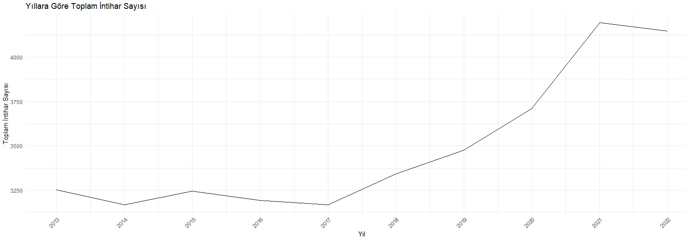
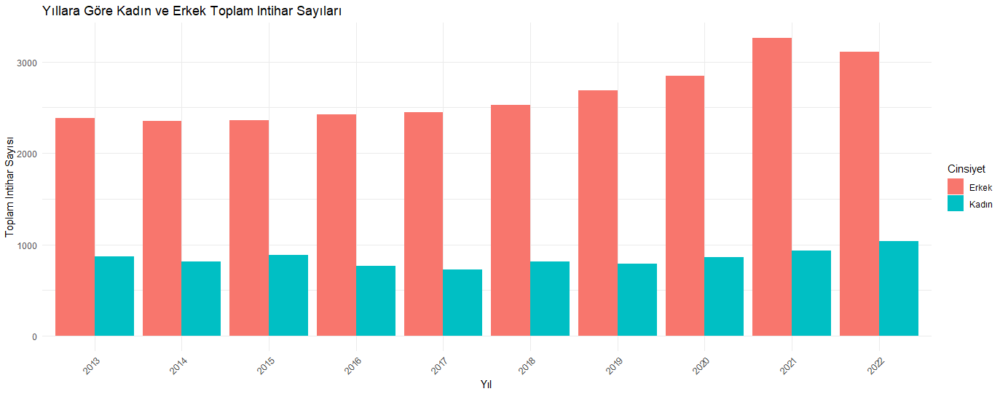
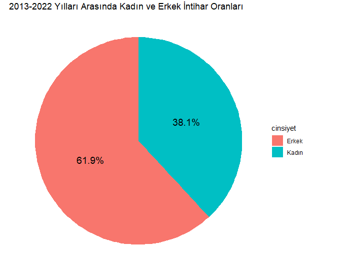
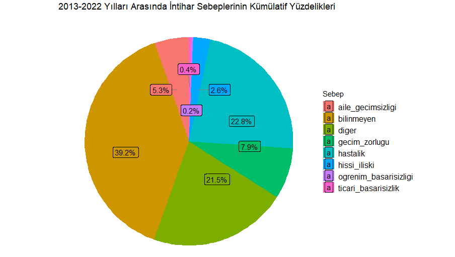
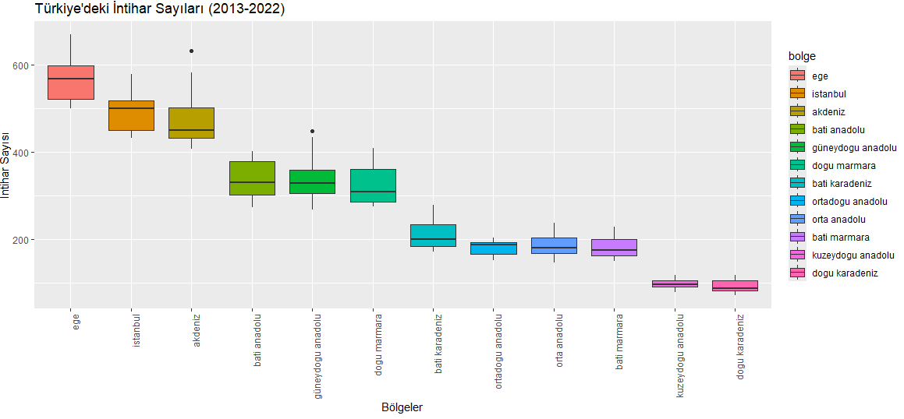
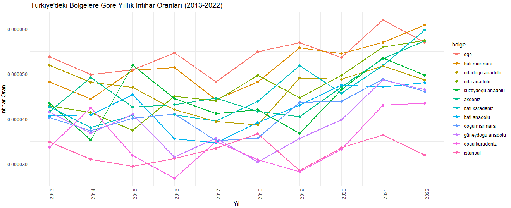

Code or Die
Projemizle ilgili güncellemelerden haberdar olmak için bu alanı takip edin.
Proje Genel Bakış ve Kapsamı
İntihar psikolojik, sosyal, genetik ve biyolojik oluşumların birleşimi sonucunda ortaya çıkar. Depresyon, anksiyete, ruhsal problemler, travmatik yaşam olayları, madde bağımlılığı, aile içi çatışmalar, sosyal izolasyon ve ekonomik zorluklar gibi pek çok unsur intiharın oluşmasında etken olabilir.
Bu projede 2013-2022 yılları arasında Türkiye’de yaşanan intihar oranları, cinsiyet ve intihar sebepleri açısından bölgesel olarak incelenmiştir. Veriler TÜİK’in belirlediği kategorizasyon doğrultusunda İstanbul, Batı Marmara, Ege, Doğu Marmara, Batı Anadolu, Akdeniz, Orta Anadolu, Batı Karadeniz, Doğu Karadeniz, Kuzeydoğu Anadolu, Ortadoğu Anadolu ve Güneydoğu Anadolu bölgelerinden elde edilen sonuçlarla oluşturulmuştur.
Tercih Sebebi
Biz kod yazamadığımız için intihar etmeyi düşünüyoruz, peki Türkiye’de insanlar neden intihar ediyor? Biz projemizde bunu inceliyoruz.
Veri Kaynağı
Veriler Türkiye İstatistik Kurumu’ndan (TÜİK) alınmıştır.
TÜİK. (2023, Şubat). Ölüm ve Ölüm Nedeni İstatistikleri, 2021. TÜİK Veri Portalı. Erişim Adresi: https://data.tuik.gov.tr/Bulten/Index?p=Olum-ve-Olum-Nedeni-Istatistikleri-2021-45715
Veri Hakkında Genel Bilgiler
TÜİK’ten elde edilen verilerle toplamda 4 farklı veri seti oluşturduk. Bu veri setlerinin ilkinde, 2013-2022 yılları arasında Türkiye genelindeki kadın ve erkek intihar sayılarını ve nedenlerini içeren veriler, diğer veri setinde ise toplam 9 farklı bölge ve metropol olan İstanbul’u ayrı incelediğimiz, toplamda 10 bölgenin intihar sayı ve nedenlerini içeren veriler incelenmiştir.
- 2013-2022 arası Türkiye’de intihar eden kadın sayısı
- 2013-2022 arası Türkiye’de intihar eden erkek sayısı
- 2013-2022 arası Türkiye’de intihar eden kişilerin intihar sebepleri <<<<<<< HEAD
- Safinaz =======
- 2013-2022 arası Türkiye’nin bölgesel nüfusu >>>>>>> 094c6dd9baa4c5a05beba425ad447288944bd77e
Analiz
Grafik 1 : Yıllara Göre Toplam İntihar Sayısı

Türkiye’deki senelik genel intihar sayılarına bakıldığında;
2013-2016 Dönemi: 2013 yılında intihar sayısı 3250 civarında başlamış ve 2016 yılına kadar ufak dalgalanmalar göstermiştir. Bu dönemde intihar sayılarında belirgin bir artış ya da azalma gözlemlenmemektedir.
2017-2018 Dönemi: 2017 yılı itibarıyla intihar sayısında hafif bir düşüş yaşanmış ve 2018 yılında tekrar yaklaşık aynı seviyelerde seyretmiştir. Bu dönemde ciddi bir artış ya da azalma gözlemlenmemektedir.
2019-2020 Dönemi: 2019 yılıyla birlikte intihar sayılarında hızlı bir artış gözlemlenmektedir. 2019 yılında başlayan bu artış, 2020 yılında belirgin bir şekilde hızlanmış ve bu yıl intihar sayısı önemli ölçüde artmıştır.
2021-2022 Dönemi: 2021 yılında intihar sayısı en yüksek seviyeye ulaşmış, ancak 2022 yılında bu sayı biraz azalmıştır. Buna rağmen, 2022 yılında intihar sayıları hala 2010’lu yılların başına kıyasla oldukça yüksektir.
Genel olarak, 2019 yılından itibaren intihar sayılarında belirgin bir artış trendi olduğu görülmektedir. Bu artışın sebepleri arasında ekonomik kriz, sosyal ya da psikolojik faktörler yer alabileceği düşünülmekle birlikte özellikle 2020 yılı itibarıyla COVID-19 pandemisinin etkilerinin de bu artışa katkıda bulunmuş olabileceği öngörülmektedir.
Grafik 2 : Yıllara Göre Kadın - Erkek Toplam İntihar Sayısı


Bu grafiklerde, Türkiye’de 2013-2022 yılları arasında cinsiyete göre toplam intihar sayıları gösterilmektedir. Grafikte kadın ve erkek intihar sayılarının yıllara göre dağılımı ve değişimi detaylı olarak incelendiğinde;
Erkek intihar sayıları her yıl kadın intihar sayılarından daha yüksektir. Bu durum, erkeklerin intihar etme olasılığının kadınlara göre daha yüksek olduğunu göstermektedir. Kadın intihar sayıları ise yıllar içinde daha az değişkenlik göstermekte ve genellikle belirli bir seviyede kalmaktadır.
2013-2018 Dönemi: 2013-2018 yılları arasında erkek intihar sayıları genellikle 2000 civarındayken, kadın intihar sayıları 700-1000 arasında değişmektedir. Bu dönemde büyük dalgalanmalar gözlemlenmemektedir.
2019 Yılı: 2019 yılında, özellikle erkek intiharlarında belirgin bir artış gözlemlenmektedir. Bu yıl, erkek intihar sayısı yaklaşık 2500’e yaklaşırken, kadın intihar sayısı ise yine 1000 civarındadır.
2020-2021 Dönemi: Bu dönemde hem erkek hem de kadın intihar sayılarında ciddi bir artış gözlemlenmektedir. 2020 yılında erkek intihar sayısı 3000’in üzerine çıkarken, kadın intihar sayısı ise yaklaşık 1200’e yaklaşmıştır.
2022 Yılı: 2021 yılına göre 2022 yılında her iki cinsiyet için de intihar sayılarında hafif bir azalma gözlemlenmektedir. Ancak erkek intihar sayıları hala 3000 civarında seyretmektedir.
Erkeklerin intihar oranları kadınlardan belirgin bir şekilde daha yüksektir. Erkeklerin daha yüksek intihar oranları, ekonomik baskılar, işsizlik ve sosyal rollerden kaynaklandığı düşünülmektedir. Erkeklerin aile geçiminden sorumlu olma ve başarısızlık korkusu gibi faktörler, intihar riskini artırabilmektedir.
Mental sağlık hizmetlerine erişimde yaşanan zorluklar, hem erkek hem de kadınlar için intihar riskini artırsa da erkeklerin yardım arayışında daha az bulunmaları, intihar oranlarının daha yüksek olmasına neden olabilmektedir.
COVID-19 pandemisi, her iki cinsiyet için de stres ve kaygı seviyelerini artırmış olabilmektedir. Özellikle 2020-2021 yıllarında intihar oranlarının artmasında pandemi etkisinin önemli bir rol oynadığı düşünülmektedir.
Grafik 3 : Sebeplerine Göre Yıllık İntihar Sayısı ve Kümülatif Dağılımı


Bu grafiklerde, Türkiye’deki intihar vakalarının sebeplerine göre yıllara göre dağılımı gösterilmektedir. Sebeplerine göre yıllık intihar sayıları incelendiğinde,
2013-2016 Dönemi: Bu dönemde “aile geçimsizliği” ve “hastalık” sebeplerine bağlı intiharlar öne çıkmaktadır. “Geçim zorluğu” ve “diğer” sebepler de önemli bir yer tutmaktadır.
2017-2018 Dönemi: Bu yıllarda da benzer bir trend gözlemlenmekte, “aile geçimsizliği” ve “hastalık” kategorileri baskın kalmaktadır. Ancak “geçim zorluğu” sebebi de dikkate değer bir artış göstermektedir.
2019-2020 Dönemi: Bu dönemde intihar sebeplerinde belirgin bir artış gözlemlenmektedir. Özellikle “geçim zorluğu” ve “hastalık” kategorilerinde artış görülmektedir.
2021-2022 Dönemi: 2021 yılında “aile geçimsizliği” sebebi ile intiharlar zirve yapmıştır. 2022 yılında ise tüm kategorilerde hafif bir azalma gözlemlenmektedir.
Bu bilgiler ışığında “Bilinmeyen” sebep grubunun azaldığı, yani yıllar ilerledikçe daha fazla data toplandığı göze çarpmaktadır. Bunun yanı sıra diğer intihar nedenleri benzer bir dağılım göstermekle birlikte, genel olarak “diğer”, “hastalık”, ve “geçim sıkıntısı” nedenleri ilk sırada bulunmaktadır.
“Hastalık” nedeniyle intihar sayısının 2020 Covid salgını ile birlikte arttığı görülmektedir. Bununla birlikte, “öğrenim başarısızlığı” nedeniyle gerçekleşen intiharlar ilk yıllarda azalış gösterse de son yıllarda artmış, bunun nedeninin ise yıl geçtikçe artan enflasyon ve ekonomik zorluklar sonucu oluşan gelecek kaygısı olabileceği düşünülmektedir.
“Ticari başarısızlık” nedeniyle gerçekleşen intihar sayısının ise ilk yıllarda azalırken son yıllarda sabit olduğu görülmektedir.
Grafik 4 : Bölgelere Göre İntihar Sayısı

Grafikte 2013-2022 yılları arasında Türkiye’nin farklı bölgelerindeki intihar sayılarının dağılımı Box plot (kutu grafiği) kullanılarak gösterilmiş olup her bölgedeki intihar sayılarının merkezi eğilim ve değişkenlikleri görselleştirilmiştir. Grafik incelendiğinde:
Grafik Türkiye’deki intihar vakalarının bölgesel dağılımını görsel olarak etkili bir şekilde sunmakta ve hangi bölgelerde daha fazla önlem alınması gerektiği konusunda fikir vermektedir.
Box Plot’a göre yüksek bir medyan değeri, o bölgedeki intihar sayılarının diğer bölgelere göre daha yüksek olduğunu göstermektedir. Grafiğe göre en yüksek medyan değerine sahip bölge Ege bölgesi olup onu İstanbul ve Akdeniz Bölgeleri izlemektedir. Doğu Karadeniz bölgesi ise en düşük intihar sayısına sahip olan bölge olup onu Kuzeydoğu Anadolu izlemektedir.
Box Plot’a göre geniş bir aralık (geniş kutu), verilerin değişkenlik gösterdiğini ve homojen dağılmadığını ifade etmekte, dar bir aralık ise verilerin daha tutarlı ve birbirine yakın olduğunu göstermektedir. Buna göre; Ege, İstanbul, Akdeniz, Batı Anadolu ve Doğu Marmara bölgeleri geniş bir dağılım göstermektedir. Diğer bölgelerde ise intihar sayıları daha düşük ve dağılım daha dar bir aralıkta yer almaktadır. Özellikle Kuzeydoğu Anadolu bölgesi en dar aralığa sahiptir.
Kutunun dışında yer alan noktalar, aykırı değerleri göstermektedir. Bunlar, veri setindeki diğer değerlerden önemli ölçüde farklı olan verilerdir. Aykırı değerler Ege, İstanbul ve Güneydoğu Marmara bölgelerinde olup, bu durum, bazı yıllarda intihar sayılarının normal aralığın oldukça dışında olduğunu göstermektedir.
Grafikte dikkate değer bir diğer nokta, intihar sayılarının bölgelere göre önemli ölçüde farklılık göstermesidir. Bu farklılıklar, ekonomik, sosyal, kültürel ve psikolojik faktörler gibi çeşitli etkenlere bağlı olabilir.
Özellikle Ege ve İstanbul gibi büyük şehirlerin bulunduğu bölgelerdeki yüksek intihar sayıları ana nedenin yüksek nüfus olmasıyla birlikte, şehirleşme, son yıllarda artan ekonomik zorluklar, stres faktörleri ve yaşam koşulları gibi değişkenlerle de ilişkilendirilebilir.
Doğu Karadeniz ve Kuzeydoğu Anadolu bölgelerinin en düşük intihar sayılarına sahip olmasında ise nüfusun az olması ana etken olmakla birlikte daha az şehirleşmenin, daha güçlü topluluk bağlarının veya diğer bölgelere göre farklı yaşam koşullarının etkili olabileceğini düşünülmektedir.
Grafik 5 : Bölgesel İntihar Sayılarının Bölge Nüfusuna Oranı

Grafikte, Türkiye’deki bölgelere göre yıllık intihar oranlarının 2013-2022 yılları arasındaki değişimleri gösterilmektedir. İntihar sayıları grafiğinden farklı olarak bu grafik intihar sayılarını o bölgenin nüfusuna oranlayarak yoğunluk üzerinden inceleme yapma şansı tanımakta, bu açıdan daha objektif çıkarımlar yapma fırsatı sunmaktadır. Her bir renk farklı bir bölgeyi temsil etmektedir. Grafik incelendiğinde;
İntihar oranlarında yıllar içinde genel bir artış gözlemlenmektedir. Özellikle 2020-2022 yılları arasında birçok bölgedeki intihar yoğunluğunda belirgin bir artış görülmektedir. Bu durum, Covid-19 pandemisinin psikolojik, ekonomik ve sosyal etkilerinin intihar oranlarına yansıması olarak yorumlanabilir.
İstanbul’da intihar sayısının yüksek olmasına rağmen yoğunluk açısından diğer bölgelere göre daha düşük sonuçlar gösterdiği görülmekte, onu Doğu Karadeniz bölgesi izlemektedir. Ege bölgesinde ise hem yoğunluk hem de intihar sayısı yüksektir.
Ege’deki yüksek intihar yoğunluğunun nedeninin ise ekonomik belirsizlikler ve özellikle turizme bağımlı pandeminin yarattığı ekonomik krizler, iş kayıpları ve finansal stres kaynaklı olduğu düşünülmektedir.
Ayrıca, büyük şehirlerde artan stres ve yalnızlık duyguları da etkili olmaktadır. Batı Marmara gibi endüstriyel ve tarımsal faaliyetlerin yoğun olduğu bölgelerde ise ekonomik dalgalanmalar ve işsizlik, intihar oranlarını artırabilmektedir.
Bazı bölgelerde, yıllar içinde dalgalanmalar görülmektedir. Örneğin, Güneydoğu Anadolu bölgesi 2015 yılında düşük bir orana sahipken 2021’de zirve yapmıştır. 2021’deki bu zirve, bölgede yaşanan ekonomik zorluklar, işsizlik, pandeminin getirdiği sosyal ve politik istikrarsızlık gibi faktörlerle açıklanabilmektedir.
Güneydoğu Anadolu ve Doğu Karadeniz bölgeleri gibi nüfusun az olduğu bölgelerde geleneksel aile yapısı ve toplumsal bağların güçlü olması, doğal çevrenin stres seviyelerini düşürme üzerindeki olumlu etkisi gibi nedenlerden ötürü intihar yoğunluğunun düşük olduğu sonucuna varılabilmektedir.
Bölgelerdeki artış ve düşüşler, sosyal, ekonomik, kültürel ve çevresel faktörlerin karmaşık bir etkileşimi sonucu ortaya çıkmakta olup bölgelerin kendine özgü dinamikleri dikkate alınarak detaylı bir analiz yapılması ve bu analizler doğrultusunda eyleme geçilmesi intihar sayılarının artışını önlemede hayati önem taşımaktadır.